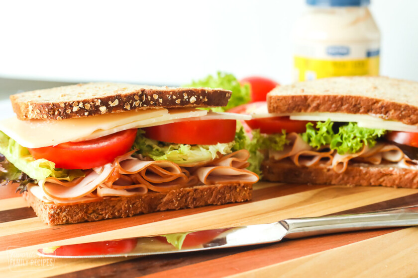

Turkey Sandwich Recipe

Nothing beats a simple, deli turkey sandwich. Try this easy 5-minute sandwich
Ingredients
- 2 slices whole wheat bread
- 2 tablespoons mayonnaise
- 4 ounces sliced or shaved deli turkey
- 2 slices Provolone cheese (or your favorite sliced cheese)
- Green leaf lettuce
- 2 slices fresh tomatoes
- Salt and pepper
Instructions
- Lay out all ingredients.
- Spread mayonnaise on bread slices and layer one slice with sliced turkey, Swiss cheese, lettuce, tomato, salt and pepper, and any other additional toppings.
- Slices of bread with turkey and cheese next to tomatoes and lettuce
- Top sandwich with remaining bread slice, cut into halves, and serve.